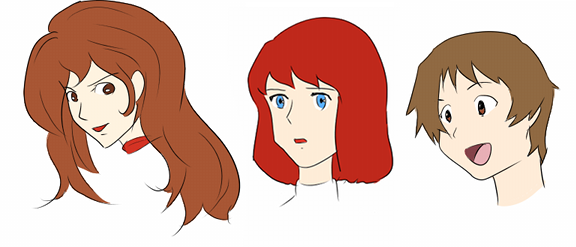

お絵描きの練習をするときに、人体デッサンとは別のベクトルの目的を持って行うのがオリジナルの絵柄の練習です。人体デッサンの練習で獲得できるリアルな絵柄の人物画では、好き嫌いの差はさほどありませんが印象が薄いです。だから他の人の絵と差別化するために特徴的な絵柄を獲得して「この絵柄は◯◯さんの絵だ」と言われることを目指すのです。その絵柄の獲得ということについて、自分でもいろいろ考察して気づいたことを書こうと思います。
絵柄の獲得とは売れる絵を描くこと
絵柄の獲得とは、文字通りキャラクターの描き方のことです。今回は人物の中でも特にヒロインについての絵柄を扱っているというイメージで話を進めます。これは個人的な意見ですが、男主人公の絵柄は結構何でもありなんじゃないかと思っています。ところで、キャラクターデザインの絵柄と聞いていくつのパターンが思い浮かびますか？おそらくこれまでに触れてきた漫画やアニメのキャラクターの顔が浮かぶのではないでしょうか。そして、それぞれに好き嫌いがあったり、格好いい可愛いなどの差があったり、情報量に差があったりするでしょう。また、仮にそれらの絵柄と物語を入れ替えてみたとしたら、作品の印象はガラリと変わってしまうでしょう。それは言うまでもなく、作品の内容とは別に絵柄も重要な要素を担っているからです。
『攻殻機動隊 STAND ALONE COMPLEX』や『東のエデン』などで知られる神山健治監督は、WEBアニメスタイルの記事でアニメーションのキャラクターデザインの絵柄について論じています。
- 作品の内容に合った絵柄をいかに獲得するかという事
- 普遍性か、流行性かという事も明確なビジョンを持たないと危険
- アニメの鮮度は短く、どんなに頑張っても４年経つと風化する
- 宮崎駿や名作劇場の画は、あの泥臭さが流行の最先端をとる事はないけど、普遍性は手に入れている
- 100％作り物で、30年経っても痛くならなかったら、これはもう凄いよ
神山監督は絵柄について、主に作品の世界観とのマッチングと、流行の変遷という観点で考えています。作品の世界観とのマッチングとは、例えばその作品のテーマが恋愛なら可愛く見える絵柄が合っているし、テーマが戦争ならリアルな絵柄が合っているなどです。その他にも演出方針によっても、例えば複雑なカメラアングルを多様するレイアウトで、丸顔だったり目が異様に大きいと立体感が破綻してしまうおそれがあるのでできる限り避ける方が良いということが言えます。
流行の変遷というのは、これは非常に難しい問題だと思います。現在では色々なジャンルがありますし、一部で流行っている絵柄が他で通用しない時代です。だから「流行の絵柄」というよりは「多面に通用する絵柄」という方が正しいかもしれません。特にアニメーションは大多数の視聴者を獲得しなければならないメディアなので、絵柄の獲得をおざなりにすることは危険です。漫画やイラストでも流行の絵柄に適応していく様子が伺えますが、あまりに個性的な絵柄は時代の移り変わりと共に需要がなくなる傾向があります。逆に普遍性を獲得している絵柄でキャラクターを描く作品は息が長いような気がします。

このように絵柄の獲得というのは、趣味でお絵描きする分には自分の好みで突っ走ればいいだけですが、多くの人に見てもらいたい場合は非常に重要な要素となります。まず根本的に格好いい可愛い絵柄の描き方が分かっていること、視聴者が求めている絵柄を察知できること、その絵柄でキャラクターデザインして動かしたとしても嘘っぽくならないかを判断すること、これらをクリアして初めて最適な絵柄を獲得したと言えるでしょう。
自分の好みで絵柄を獲得することの利点
ではお絵描きするときには、売れる絵柄を描くことが最大の目標かというと、そうではないことはもう分かっていますね？自分の描きたいものを描くことは大切です。そもそも売れる絵の描き方を心得ている人は特殊なスキルを持っているだけで、普段は自分の好きなものを描いていると思います。ところで、自分の好きな絵柄を持っているということは、人物デッサンの練習に影響を与えるのではないかと感じました。
例えば、これから描こうとしているイラストのシチュエーションを考えているとき、頭の中で様々なシーンをイメージするはずです。そのときに自分の好きな絵柄の描き方が把握できてないと上手くイメージ仕切れないと思います。つまり、頭の中でキャラクターデザインにエネルギーを消費してしまって、キャラクターの演技に費やすエネルギーを浪費してしまうわけです。これはイラストを制作しているときに限らず、練習としてイメージスケッチする際にもその速度に差が生まれます。
自分の絵柄の描き方を把握していれば練習量に差が出ると言いましたが、さらに練習で得たことをフィードバックするのにも有利になると思います。たった今描いた人物のデッサンが狂っていないかどうかということとは別に、ルックスとしてはどうかの判断には基準となる絵柄が必要です。一旦自分の絵柄を獲得しさえすれば、キャラクターをデッサンするたびに評価することができますし、ちまちまと軌道修正して知識を蓄積することができます。そう考えると、初めてお絵描きをする人が人物の描き方を練習するときには、理想の絵柄でなくても誰かのパクリで構わないので獲得することが良いのではないかと思います。まずはテンプレートを獲得して方向性と評価基準を設けることが、お絵描きの練習でつまづかない方法の一つです。強いて言えば、完全にパクれるとしたらそれはそれで一種の才能です。初めにパクっても自分なりに練習を積み重ねれば、おのずと自分の絵柄の描き方にたどり着くものだと思います。
先ほどは、効率という観点で自分の絵柄を獲得していることの利点を述べましたが、もっと単純な話をするとやはり愛着というものが大きいですね。自分が良いと思うものを模索した結果として獲得した絵柄であれば、何とも言えない感動もあるのでは無いでしょうか。好きな作家の絵柄で描かれたキャラクターなら頭の中で演技させることができるはずです。いわゆる妄想ですね。ですがそれは大切な技術だと思います。物語の構想を練るとき、目を瞑った状態で自分の絵柄を正確にイメージできますか？そこで細部に注目したときにボヤケていたり、他人の絵柄が浮かんできたらまだまだ修行が足りないということです。